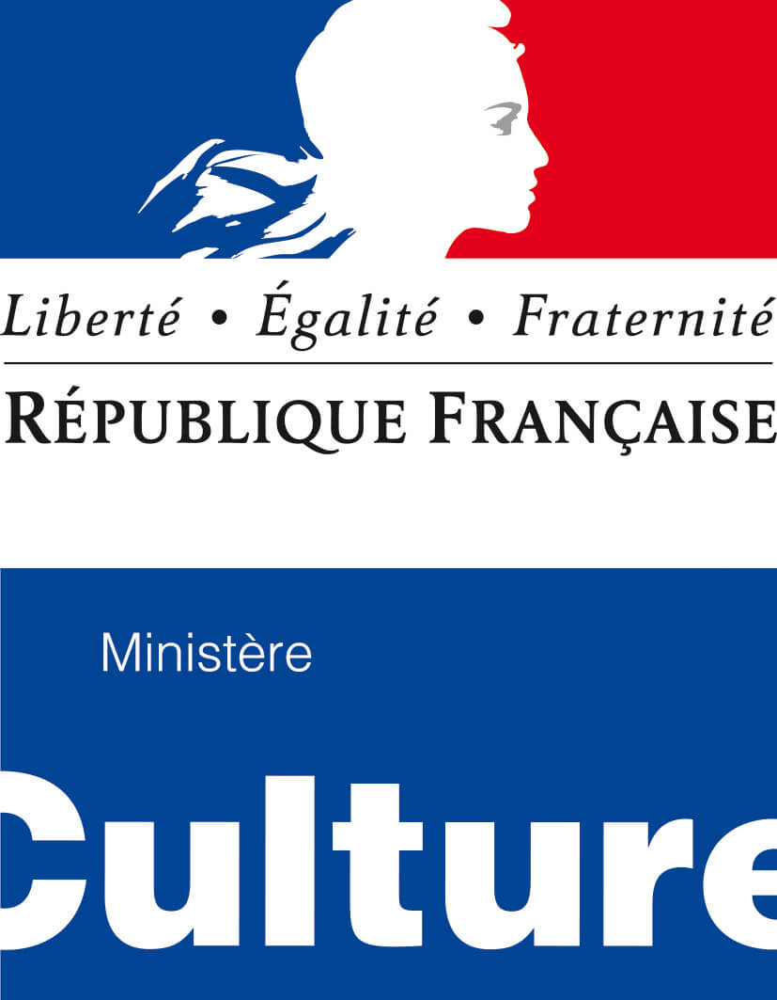

Nos partenaires


Les Archives nationales font leur hackathon et lancent une série de défis à partir de certains de leurs fonds d’archives en lien avec les
problématiques de la Cité et du citoyen. C’est, pour les amateurs et développeurs soucieux d’agir pour la société dans laquelle ils vivent,
une occasion unique de « s’amuser » avec des fonds extraordinaires tout en contribuant à l’intérêt commun en favorisant la diffusion de 14
siècles d’archives de l’État.
Parmi les millions de data conservées aux Archives nationales, huit jeux de données sur des thèmes citoyens et sociétaux ont été sélectionnés
afin que chaque équipe puisse s’en emparer, se les approprier et proposer des outils pour en partager les contenus.
Le hackathon des Archives nationales s’inscrit dans le prolongement de la semaine de l’innovation publique.
Instituée le 19 mai 1802 par Napoléon Bonaparte, l'ordre national de la Légion d'honneur est l'institution qui est chargée de décerner la plus haute décoration honorifique française. Elle récompense depuis ses origines les citoyens (militaires ou civils) ayant rendu des « services éminents » à la Nation.
"Léonore" est la base de données française qui répertorie les dossiers des membres de l'ordre national de la Légion d'honneur. Véritable mémoire de plus de deux siècles, elle comprend les dossiers des personnes promues depuis 1802 et décédées avant 1977. À ce jour, la base Léonore décrit 381 155 dossiers et 5 200 000 images et est organisée en un ensemble de notices et d’images.
De nombreux citoyens consultent quotidiennement ces informations. Toutefois, les Archives nationales sont aujourd’hui confrontées à un problème d’obsolescence de cet outil et de complétude des données. Les technologies utilisées pour l’application actuelle sont vieillissantes, difficilement maintenables. Pour certains dossiers, toutes les informations n’ont pas été renseignées dans la base de données (date de naissance, prénom du légionnaire etc.) et par ailleurs certaines informations visibles sur les images mériteraient de venir enrichir les notices (ex. : numéro de matricule, date de décès, métier, dates de décoration, etc.).
Quels outils développer pour faciliter l’accès des publics et développer les usages de la base Léonore (interface proposant des modules de recherche optimisée et des outils pour améliorer l’expérience de l'utilisateur, outils de visualisation des données, etc.) ?
Comment améliorer et optimiser l’interopérabilité des données (avec des bases externes type Wikidata, data.bnf.fr, etc.) mais aussi avec les référentiels des Archives nationales (notamment lieux, personnes physiques) ?
Quels outils développer pour faciliter les alignements entre les données de Léonore et d’autres données externes ?
Comment enrichir les données et diversifier les informations de la base Léonore (crowdsourcing / production participative de contenus, nouveaux systèmes d’indexation, etc.) ?
Nombreux sont les événements fondamentaux qui surviennent dans la vie d’un citoyen et dont on garde une trace chez les notaires : contrats de mariage, actes de notoriété, testaments, inventaires après décès, baux, contrats d’apprentissage, achats de biens immobiliers… Le notaire est un témoin privilégié de la société ; son rôle est d’expliciter et de mettre par écrit les actes du citoyen, dont il garde dans ses archives l’original : la minute.
Les Archives nationales conservent les minutes des notaires parisiens depuis l’origine (XVe siècle). Pour certains notaires, les actes ont été entièrement analysés, donnant lieu à des notices homogènes, riches d’informations (nom des clients, origine géographique, profession, type d’acte, informations topographiques parisiennes...).
Ce jeu de données détaillant les minutes de quelques notaires ayant exercé entre le XVIIe et le début du XXe siècle permet d’aborder de façon exhaustive l’ensemble des activités pour lesquelles une étude notariale parisienne était sollicitée.
Ces informations, exprimées de façon sérielle, mériteraient d’être présentées et analysées pour en saisir toute la richesse.
Par ailleurs, les minutes de notaires font l’objet de très nombreuses demandes de copies. Un service administratif en ligne serait nécessaire, destiné à guider efficacement l’usager,depuis la formalisation de sa requête jusqu’à la mise à disposition de la reproduction numérique qu’il souhaite.
Comment visualiser les données des actes notariés (analyse statistique de l’activité du notaire - restitutions chronologiques et thématiques -, cartographie des clients du notaire, aire d’influence du notaire…), afin d’en tirer des enseignements d’ordre économique, social ou sociologique et de renouveler la connaissance de la société parisienne ?
Peut-on lier les données des Archives nationales avec des ressources externes, par exemple des référentiels issus du monde des notaires, les bottins, etc. ?
Quels outils de reconnaissance d’entités nommées développer pour identifier les personnes mentionnées dans les actes ?
Quel service en ligne proposer pour la reproduction à la demande des actes notariés ?
Les personnalités politiques construisent des relations directes avec les citoyens : les discours qu’elles prononcent à de nombreuses occasions et les reportages photographiques réalisés lors des déplacements officiels ou des réceptions protocolaires attestent de leurs contacts avec la population.
Grâce à ces documents, on peut reconstituer les voyages des personnalités politiques contemporaines, mesurer la fréquence de leurs déplacements, déterminer les zones géographiques qu’elles visitent le plus souvent, déterminer les activités protocolaires récurrentes et incontournables, analyser les thèmes qu’elles abordent et la façon dont elles s’adressent aux citoyens, reconstituer leur entourage, comprendre, en somme, comment fonctionne la politique.
Ce défi rassemble un jeu de données issus des discours de deux hommes politiques, dont certains n’ont jamais été publiés : ceux du général de Gaulle, prononcés entre 1946 et 1969, et ceux de Michel Rocard, durant la période où il fut Premier Ministre (1988-1991). Il contient également des photoreportages, certains étant directement en lien avec les discours.
De multiples usages sont possibles autour de l’exploitation de ces données, notamment comprendre et déchiffrer le discours de ces deux hommes politiques et les restituer sur une interface innovante.
Quels outils utiliser pour décrypter les discours politiques et renouveler leur analyse sémantique à travers l’exploitation statistique des lemmes (text mining) ?
Quelles interfaces de navigation proposer permettant de marier dans un seul outil de visualisation discours et photographies, et de parcourir les données, par le fil de la chronologie et par la cartographie des déplacements ?
Quelles associations établir entre les discours et les reportages photographiques ?
Comment enrichir les reportages photographiques en permettant l’identification automatisée des visages et leur annotation par le public (crowdsourcing) ?
Au XIXe siècle, les montagnes ont subi d’importantes catastrophes naturelles, et l’État français, conscient de la dégradation importante du paysage, élabore à partir des années 1860 une politique visant à protéger, restaurer et conserver cet environnement naturel : c’est l’objet du service de la restauration des terrains de montagne (RTM).
Les ingénieurs responsables des travaux de reboisement et d’aménagement prennent dès cette époque-là de nombreux clichés, pour alerter le public sur la dégradation du paysage et présenter leurs travaux. Minutieusement documentés, ces clichés photographiques constituent une source de premier plan pour découvrir sur un siècle l’évolution du paysage des montagnes, la vie quotidienne de leurs habitants, mais aussi l’action de l’homme sur l’environnement et la nécessité de le protéger.
Les Archives nationales souhaitent mieux faire connaître et partager ce fonds photographique à la richesse insoupçonnée afin de contribuer à la connaissance et à la protection de cet environnement fragile.
Comment faire revivre l’exceptionnel fonds photographique de la restauration des terrains de montagne? Quelles applications imaginer pour que chacun, notamment les amoureux de la nature, puisse découvrir ces images, comparer le paysage ancien avec l’actuel et s’approprier l’histoire de l’environnement ?
Comment relier ces images aux référentiels géographiques ? (liens avec le référentiel des lieux des Archives nationales, cartographie, etc.)
Comment connecter les clichés avec des ressources externes (vocabulaires, bases d’images, etc.) ?
Comment le public peut-il enrichir les données et réutiliser les contenus ?
À partir de 1809, l’attribution de la nationalité française est prononcée par un décret de naturalisation. Les décrets de naturalisation font partie des documents les plus demandés aux Archives nationales par le public, qu’il s’agisse de retracer le parcours d’un individu, de reconstituer l’histoire familiale, d’étudier l’histoire des migrations en France, ou tout simplement pour justifier sa nationalité française.
La recherche d’un décret de naturalisation demeure néanmoins très complexe, pour l’usager comme pour les Archives nationales, en raison des spécificités liées à la situation des individus et des modalités d’attribution de la citoyenneté. Pour retrouver le dossier d’une personne, il faut suivre un parcours de recherche difficile au moyen de divers inventaires plus ou moins détaillés.
Un service administratif en ligne, destiné à guider efficacement le public, serait nécessaire pour la recherche d'un décret de naturalisation. De même, les outils de recherche pourraient être enrichis en trouvant le moyen de récupérer des informations écrites sous forme manuscrite dans les dossiers de naturalisation.
Comment développer un service administratif en ligne performant pour guider le public dans des démarches de recherche complexes ?
Comment enrichir les métadonnées d’identification des individus à partir d’informations manuscrites contenues dans leurs dossiers ?
Comment relier certaines données (profession, lieu de naissance, etc.) aux référentiels des Archives nationales ?
Comment tirer des enseignements des données sociologiques et géographiques à l’aide d’outils statistiques ?
Les Archives nationales diffusent en ligne sur leur salle des inventaires virtuelle des milliers de notices décrivant les archives conservées par l'institution : archives publiques provenant des administrations centrales de l'État, archives des notaires de Paris et fonds privés d'intérêt national.
Ces archives sont, pour une faible partie, numérisées et directement accessibles en ligne (près de 8 millions d'images numérisées).
Quels outils développer pour reconnaître des entités nommées (patronymes, noms de lieux, organisations, etc.) ?
Comment les associer aux référentiels des Archives nationales ?
Comment exploiter les métadonnées pour proposer d’autres modalités de présentation et de recherche des ressources des Archives nationales ?
Les Archives nationales utilisent actuellement une vingtaine de référentiels pour indexer le contenu de leurs inventaires et décrire les entités (personnes, familles et collectivités) qui ont produit les fonds d’archives qu’elles conservent (référentiel des organismes producteurs des archives, des lieux, des personnes physiques et morales, des activités (métiers), des fonctions, etc.).
Ils contribuent à faciliter les recherches des utilisateurs au sein de la salle des inventaires virtuelle des Archives nationales. Les notices qu’ils contiennent constituent potentiellement autant de ponts entre les métadonnées produites par les Archives nationales et les métadonnées d’autres institutions.
En cours d’enrichissement et d’évolution technique et fonctionnelle, ils permettent aux archivistes de normaliser leur travail d’indexation et en particulier de construire une base de connaissances sur le contexte d’origine des archives.
Cependant, les référentiels sont encore sous-utilisés par les archivistes et les utilisateurs finaux.
Comment améliorer l’indexation des inventaires à l’aide des référentiels ?
Quels dispositifs de visualisation imaginer pour aider à évaluer quantitativement et qualitativement l’indexation des inventaires dans leur état actuel ?
Quels résultats pourrait donner un travail de liage des données des référentiels avec des bases externes de type Wikidata ?
Quels outils développer pour faciliter l’interopérabilité entre les référentiels des Archives nationales et des référentiels externes (data.bnf.fr, Wikidata, Geonames, etc.) ?
Parmi leurs missions fondamentales, les Archives nationales assurent la collecte règlementaire des documents et des données produits par les administrations centrales et les grandes structures de l’État lorsque elles n’en ont plus l’utilité immédiate. Elles accueillent aussi des archives jusque-là détenues en main privée. Chaque année, les Archives nationales établissent un bilan des entrées d’archives qu’elles ont reçues en leurs murs.
Ainsi, en 2017, ce sont plus de 4,7 kilomètres linéaires de documents sur support traditionnel (papier, photographies ou calques) et 4,7 To de documents nativement numériques qui sont entrés par la voie ordinaire des versements en provenance de la présidence de la République, des ministères et des opérateurs nationaux ou encore par dons, dépôts et achats pour les archives privées.
Le registre des entrées des Archives nationales établit la liste de ces entrées, assortie de l’identification des producteurs (administrations ministérielles, opérateurs de l’État, organismes ou personnes privés), de leur domaine d’activité, de la date des documents versés, de la nature de leur support. La visualisation et le suivi de ces entrées est un enjeu clé pour les Archives Nationales.
Quels outils de visualisation proposer pour permettre une meilleure connaissance et un suivi optimal des entrées d’archives ?
Comment évaluer la collecte en visualisant sur plusieurs années les secteurs producteurs d'archives et ceux qui le sont moins ?
Petit-déjeuner
Mentoring actif : passage des mentors dans les équipes
Introduction, présentation des défis, des données, des mentors et de l'agenda
Incroyable speech d'Arkhn pour changer le monde
Un prix de 4000 euros sera attribué à l'équipe lauréate du hackathon des Archives nationales.
Le plus du LLL ! Le LLL offrira une résidence de trois mois dans ses locaux à cette équipe.
Créées pendant la Révolution française, les Archives nationales conservent les archives publiques de l’État depuis le VIIe siècle, les minutes des notaires parisiens et de nombreux fonds d’archives privées de particuliers ou d’associations. Les Archives nationales permettent l’accès gratuit de tous les citoyens aux archives publiques et offrent ainsi la garantie de la transparence de l’État et de la démocratie. Ce sont près de 350 kilomètres linéaires de fonds et 50 téraoctets d’archives numériques, qui constamment s’enrichissent, soit des millions de documents précieux tant pour leur contribution à la connaissance historique et à la mémoire individuelle et collective que pour leur intérêt patrimonial unique et inestimable.
Engagé pour une innovation technologique civique et sociale, le Liberté Living-lab encourage le développement de projets entrepreneuriaux en faveur d'enjeux de bien commun. Il réunit dans un espace de 2000m2 au cœur de Paris un collectif de 200 résidents français et internationaux aux profils pluridisciplinaires : start-ups tech d’intérêt général, équipes de grandes entreprises (labs innovation et intrapreneurs), chercheurs, designers et missions de service public. Tous conjuguent entrepreneuriat, tech et design sur de grands enjeux de société : futur du travail, éducation, transformation des territoires, transition énergétique, santé, culture ou encore démocratie.
Liberté Living-lab 9 Rue d'Alexandrie, 75002 Paris, France